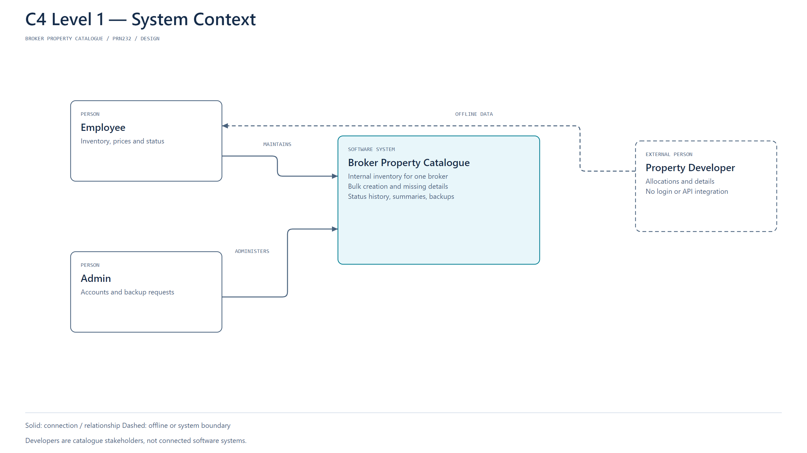
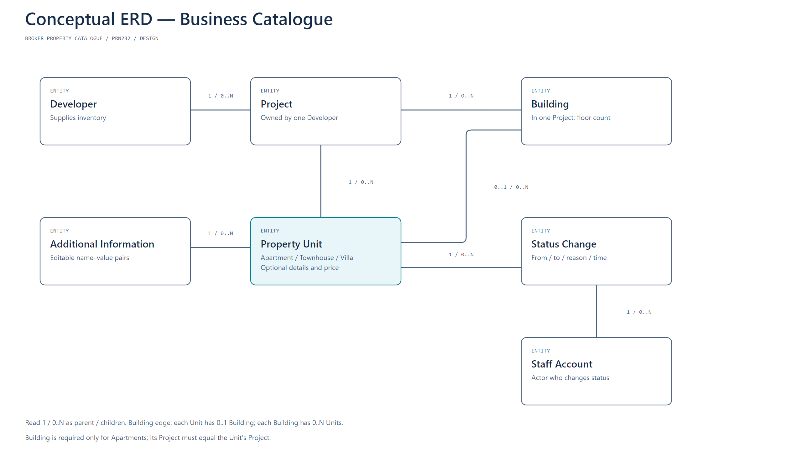
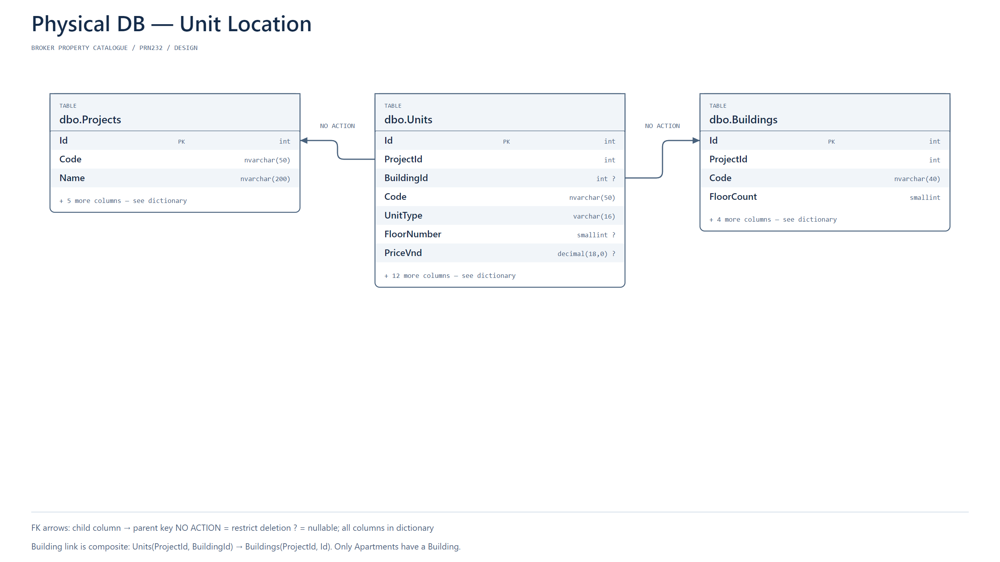
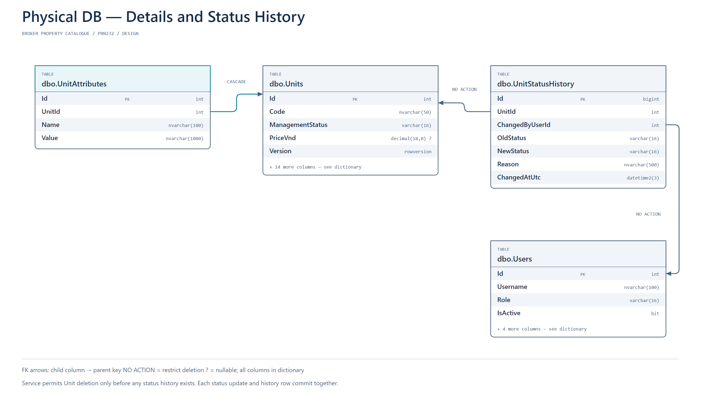
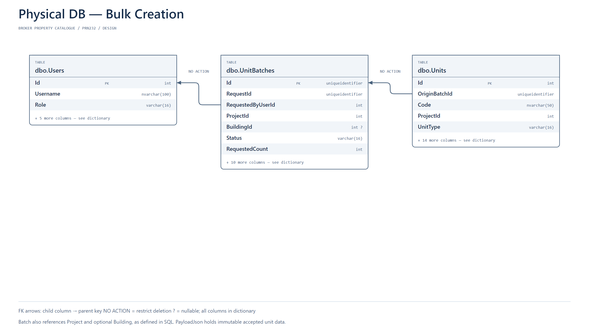
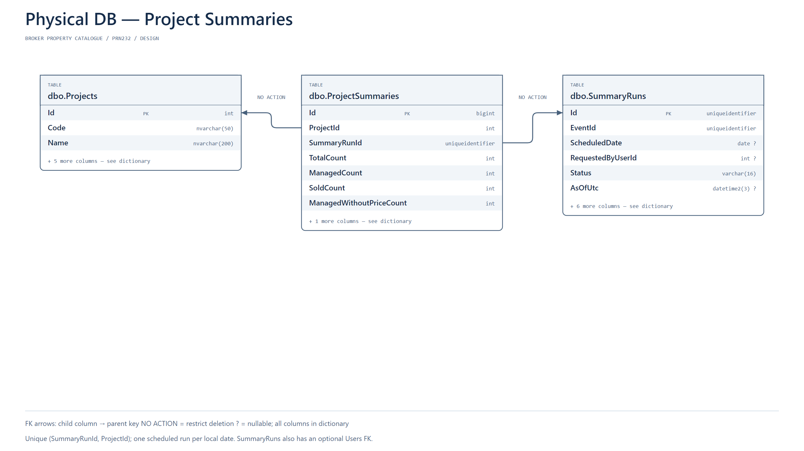
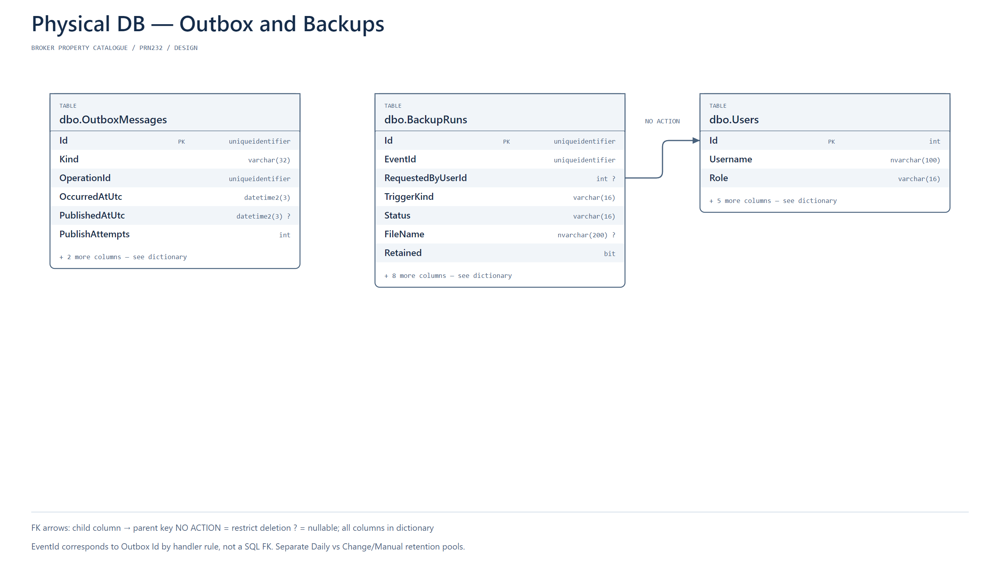

C4 Level 1 — System Context
Employees and Admin use the internal catalogue; developers supply information offline to employees.

C4 Level 1 and Level 2 only. Business ERD and physical subsystems. White / navy / cyan; offline system typography.
Employees and Admin use the internal catalogue; developers supply information offline to employees.

React calls the REST API, the API calls gRPC and SQL, and the Worker relays and consumes Redis work while SQL writes backup files.

Developers own Projects; Units belong to Projects, Apartments also belong to Buildings, and Units have additional information and status changes.

Projects reference Developers and Buildings reference Projects; deletion is restricted.

Units reference Projects and Buildings with a same-Project composite constraint.

UnitAttributes cascade on eligible Unit deletion; immutable history restricts Unit and actor deletion.

Accepted UnitBatches reference staff; created Units retain their originating Batch.

Each ProjectSummary belongs to one Project and one SummaryRun.

Outbox carries durable intent; BackupRuns store execution and retention state and optionally reference requesting staff.
